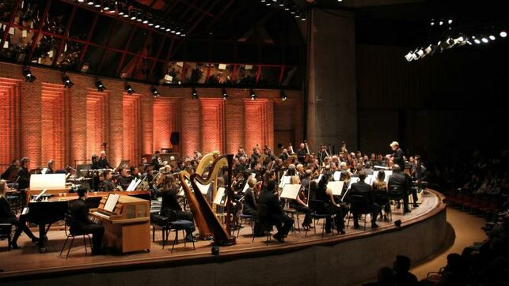

Music and Instruments Lovers Festival, por un festival mejor
Music and Instruments Lovers Festival se define por la difusión de la cultura y el compromiso social. Asistir a festivales de música clásica es el hobbie que ha unido al joven equipo de MILF. Si algo está claro a día de hoy es que los festivales son los nuevos conciertos. Ese cambio de tendencia va asociado a las nuevas generaciones, que prefieren disfrutar de más artistas en un período más largo de tiempo y muchas veces al mismo precio que tendría un concierto de una estrella de rock. Esa nueva forma de consumo, unida a la afición que tiene el equipo de MILF por asistir a este tipo de eventos fueron las claves que motivaron la creación de un proyecto que es diferente a otros portales online que tratan sobre festivales de música clásica. Nuestra programación incluye conciertos y conferencias de grandes artistas de la música clásica. ¡El festival crea un espacio para el disfrute de la música clásica y el diálogo con artistas reconocidos a nivel internacional que no te podrás perder!